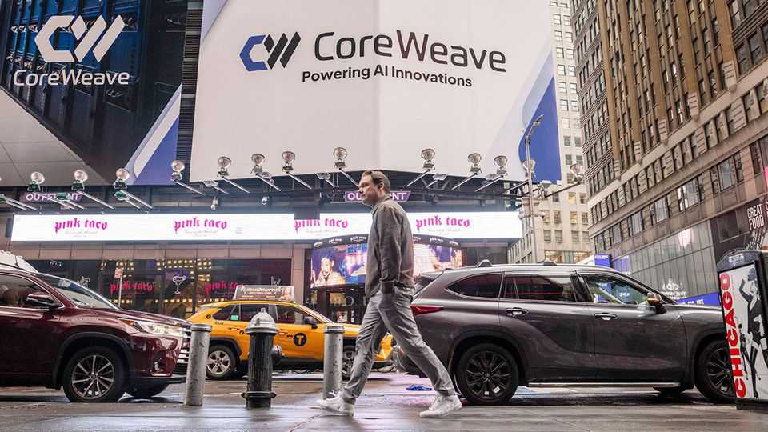
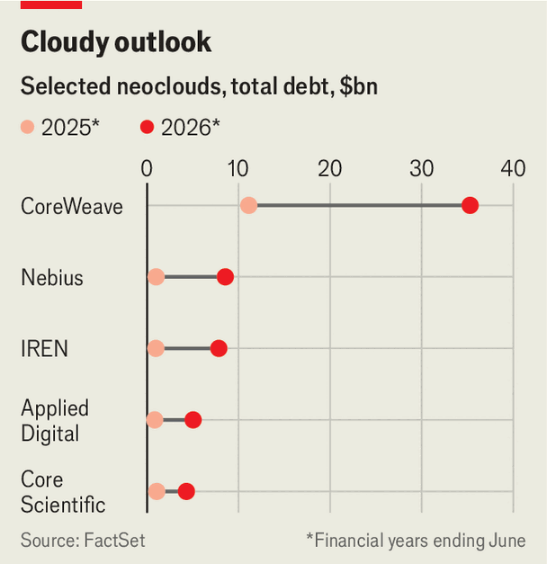

Neoclouds like CoreWeave are getting much bigger—and riskier
The mountain of debt funding their expansion is growing rapidly

Sep 3rd 2026
New technologies often create good conditions for middlemen. In the 1960s entrepreneurs snapped up mainframes from IBM and leased them to banks and defence companies. In the dotcom era “domainers” bought website addresses and sold them at a higher price. Artificial intelligence is no different. Consider the neoclouds, such as CoreWeave, which buy specialist AI chips and rent them out. They are among the fastest-growing companies in the AI industry. But they are also some of the most vulnerable.
Neoclouds have thrived over the past few years, for two reasons. The first is that demand for AI has grown more quickly than America’s “hyperscalers” have been able to expand their computing capacity. Many neoclouds started off as crypto miners, and subsequently repurposed their data centres. And because they have focused exclusively on AI, rather than a broader range of cloud services, they have been able to concentrate their investments. As a result, their biggest customers are model-makers, such as OpenAI, and the hyperscalers themselves, who often lease extra capacity from the neoclouds. The second reason for their rise is that Nvidia, the leading maker of AI chips, which is eager to reduce its reliance on the hyperscalers’ custom, has provided various forms of financial support to help them buy more of its chips.
The combined annual revenue of the five largest listed neoclouds—CoreWeave, Nebius, IREN, Applied Digital and Core Scientific—has risen to $18bn over the past 12 months, up from $3bn in 2024. Although they are still far behind the hyperscalers, they are gaining ground. Dell Oro, a research firm, estimates that in total neoclouds have 1.5-2.5 gigawatts (GW) of data-centre capacity between them, compared with a combined 20-24GW for Alphabet, Amazon, Microsoft and Meta. But they are roughly doubling their capacity each year, which is about triple the rate that the hyperscalers are managing.

That growth, however, is being funded by mountains of debt. The five listed neoclouds now have $61bn-worth of borrowing on their balance-sheets, quadruple the amount just 12 months ago, as well as $18bn-worth of operating leases (see chart). None is generating an operating profit, and all are deeply in the red once interest bills are added. In the most recent quarter Nebius’s interest payments amounted to a fifth of its revenue; CoreWeave’s reached a quarter.
The neoclouds are betting that, if they continue their vertiginous growth, profits will eventually arrive. Perhaps. But the competition has shown no sign of easing. Besides the established cloud giants—as well as Meta, which is considering launching its own third-party service—there are now some 200 neoclouds around the world duking it out for contracts.
Add to that a growing cohort of mid-sized providers. Oracle, originally a database company, has spent a fortune trying to join the hyperscalers’ club with a cloud business of its own. Its capital expenditure, much of which is financed by borrowing, is expected to hit $77bn this year. In July SoftBank, a Japanese conglomerate up to its eyeballs in debt, unveiled a cloud business called SB Neo. The group also owns a majority stake in SB Energy, an infrastructure business that has teamed up with OpenAI to build a giant data centre in Ohio, and which filed on September 1st for an initial public offering.
Fierce rivalry compounds the two big risks facing neoclouds. The first is a credit-market shock that pushes borrowing costs higher, further squeezing margins. Investors already seem jittery: the spread in yields between neoclouds’ bonds and junk bonds as a whole is widening.
A second—and even bigger—danger is that supply and demand rebalance. Right now, vast amounts of infrastructure are being built on the assumption that use of the technology will continue to soar. If the pace of adoption slows, however, model-makers and hyperscalers alike may quickly decide they no longer need the neoclouds.
Either event would be cataclysmic for the industry. Only those neoclouds that offer something more to customers than sheer capacity would avoid going bust. To that end, some are focusing on positioning themselves as reliable infrastructure providers for Western governments that have grown suspicious of America’s tech giants. Others, including CoreWeave and Nebius, are trying to offer added software services to customers. To survive, the neoclouds may need to be more than middlemen. ■